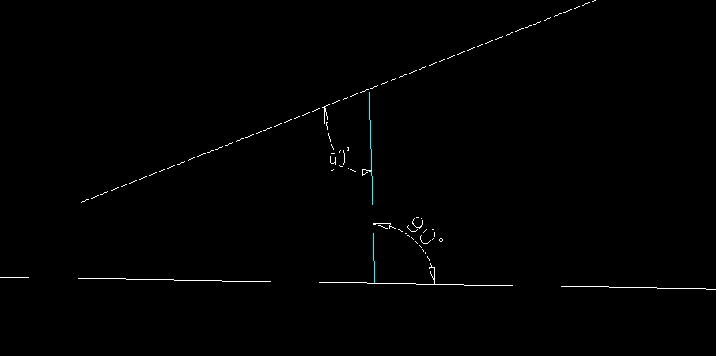

Class Line3D
- Namespace
- SearchAThing.Sci
- Assembly
- netcore-sci.dll
Defines a line by an application point (From) and an extension from there (V). To is computed as From+V. Line can be built by givin From and To, or From and V using specialized constructor with Line3DConstructMode. Line can be built from a point using LineTo(), LineV() or LineDir() extension methods.
public class Line3D : Edge- Inheritance
-
Line3D
- Inherited Members
- Extension Methods
Constructors
Line3D(Line3D)
build a copy of given line
public Line3D(Line3D l)Parameters
lLine3D
Line3D(Vector3D, Vector3D)
build segment
public Line3D(Vector3D from, Vector3D to)Parameters
Line3D(Vector3D, Vector3D, Line3DConstructMode)
build segment from plus the given vector form to
public Line3D(Vector3D from, Vector3D v, Line3DConstructMode mode)Parameters
fromVector3DvVector3DmodeLine3DConstructMode
Line3D(double, double, double, double)
z=0
public Line3D(double x1, double y1, double x2, double y2)Parameters
Line3D(double, double, double, double, double, double)
public Line3D(double x1, double y1, double z1, double x2, double y2, double z2)Parameters
Fields
XAxisLine
public static readonly Line3D XAxisLineField Value
YAxisLine
public static readonly Line3D YAxisLineField Value
ZAxisLine
public static readonly Line3D ZAxisLineField Value
Properties
A0ProgeCadScript
public string A0ProgeCadScript { get; }Property Value
A0QCadScript
public string A0QCadScript { get; }Property Value
CadScript
public string CadScript { get; }Property Value
Dir
V normalized
public Vector3D Dir { get; }Property Value
DisambiguatedPoints
retrieve a unique endpoint representation of this line3d segment (regardless its from-to or to-from order) such that From.Distance(Vector3D.Zero) less than To.Distance(Vector3D.Zero)
public IEnumerable<Vector3D> DisambiguatedPoints { get; }Property Value
DxfEntity
dxf entity representing this geom
public override EntityObject DxfEntity { get; }Property Value
- EntityObject
From
application point vector
public Vector3D From { get; }Property Value
GeomFrom
start point
[JsonIgnore]
public override Vector3D GeomFrom { get; }Property Value
GeomTo
end point
[JsonIgnore]
public override Vector3D GeomTo { get; }Property Value
Inverted
return inverted segment
public Line3D Inverted { get; }Property Value
Length
geometry length ( 0 for point, line length for lines, perimeter for arc/circles )
public override double Length { get; }Property Value
MidPoint
public override Vector3D MidPoint { get; }Property Value
Points
public IEnumerable<Vector3D> Points { get; }Property Value
Swapped
return segment with swapped from,to
public Line3D Swapped { get; }Property Value
To
From + V
public Vector3D To { get; }Property Value
V
vector depart at From to identify To
public Vector3D V { get; }Property Value
Vertexes
vertexes of this geom ( can be 1 for points, 2 for line/arc/circles )
[JsonIgnore]
public override IEnumerable<Vector3D> Vertexes { get; }Property Value
Methods
ApparentIntersect(Line3D)
Find apparent intersection between this and given other line returning (shortest) segment perpendicular to either lines or null if lines parallels. This method will used from Intersect to find intersection between lines when perpendicular segment length not exceed given length tolerance.
public Line3D? ApparentIntersect(Line3D other)Parameters
otherLine3Dother 3d line
Returns
- Line3D
Perp segment from(on this), to(on other).
Remarks
unit test 
BBox(double)
bbox of this geom
public override BBox3D BBox(double tol)Parameters
toldouble
Returns
Bisect(double, Line3D, Vector3D?)
returns bisect of two given segment/lines ( if given segment not share nodes but intesects returned bisect start from ip ) bisect choosen will be the one between this and other withing shortest angle
if two given lines are parallel and parallelRotationAxis is given then bisect results as this segment rotated PI/2 about given axis using To as rotcenter
public Line3D? Bisect(double tol, Line3D other, Vector3D? parallelRotationAxis = null)Parameters
Returns
Colinear(double, Line3D)
public bool Colinear(double tol, Line3D other)Parameters
Returns
CommonPoint(double, Line3D)
returns the common point from,to between two lines or null if not consecutives
public Vector3D? CommonPoint(double tol, Line3D other)Parameters
Returns
Copy()
create copy of this geometry.
public override Geometry Copy()Returns
Remarks
it's required to call base.CopyFrom(other) to ensure geometry properties to be copied.
Divide(int, bool)
find split points for this geometry splitter int cnt parts
public override IEnumerable<Vector3D> Divide(int cnt, bool include_endpoints = false)Parameters
Returns
EdgeContainsPoint(double, Vector3D)
States if edge contains given point on its perimeter
public override bool EdgeContainsPoint(double tol, Vector3D pt)Parameters
Returns
EdgeMove(Vector3D)
public Edge EdgeMove(Vector3D delta)Parameters
deltaVector3D
Returns
EnsureFrom(double, Vector3D)
if this segment from matches the given point returns this; if this segment to matches the given point return this with from,to swapped; precondition: this segment must have from or to equals given from
public Line3D EnsureFrom(double tol, Vector3D ptFromDesired)Parameters
Returns
EqualsTol(double, Line3D, bool)
Checks if two lines are equals
public bool EqualsTol(double tol, Line3D other, bool strict = false)Parameters
toldoublelength tolerance
otherLine3Dother line
strictboolif false(default) two line equals even with swapped from,to
Returns
GeomEquals(double, Geometry, bool)
states if this geom equals to given other
public override bool GeomEquals(double tol, Geometry other, bool checkSense = false)Parameters
toldoublelength tolerance
otherGeometryother geom
checkSenseboolif false two geometry with different sense but same space coverage are considered equals
Returns
GeomIntersect(double, Geometry, GeomSegmentMode, GeomSegmentMode)
find intersections between this and another geometry resulting in zero or more geometries.
public override IEnumerable<Geometry> GeomIntersect(double tol, Geometry _other, GeomSegmentMode thisSegmentMode = GeomSegmentMode.FromTo, GeomSegmentMode otherSegmentMode = GeomSegmentMode.FromTo)Parameters
toldouble_otherGeometrythisSegmentModeGeomSegmentModeif this is Line3D specifies how to consider
otherSegmentModeGeomSegmentModeif other is Line3D specifies how to consider
Returns
Intersect(double, CoordinateSystem3D)
returns null if this line is parallel to the cs xy plane, the intersection point otherwise
public Vector3D? Intersect(double tol, CoordinateSystem3D cs)Parameters
toldoublecsCoordinateSystem3D
Returns
Intersect(double, Line3D, GeomSegmentMode, GeomSegmentMode)
Intersects two lines with arbitrary segment mode for each.
public Vector3D? Intersect(double tol, Line3D other, GeomSegmentMode thisSegmentMode, GeomSegmentMode otherSegmentMode)Parameters
toldoubleotherLine3DthisSegmentModeGeomSegmentModeotherSegmentModeGeomSegmentMode
Returns
Intersect(double, Line3D, LineIntersectBehavior)
Find intersection point between this and other line using given tolerance. Returns null if no intersection, otherwise it returns a point on the shortest segment ( the one that's perpendicular to either lines ) based on given behavior ( default midpoint ).
public Vector3D? Intersect(double tol, Line3D other, LineIntersectBehavior behavior = LineIntersectBehavior.MidPoint)Parameters
toldoubleotherLine3DbehaviorLineIntersectBehavior
Returns
Intersect(double, Line3D, bool, bool)
Intersects two lines with arbitrary segment mode for each.
public Vector3D? Intersect(double tol, Line3D other, bool thisSegment, bool otherSegment)Parameters
Returns
Intersect(double, Plane3D)
returns null if this line is parallel to the plane, the intersection point otherwise
public Vector3D? Intersect(double tol, Plane3D plane)Parameters
Returns
IsParallelTo(double, CoordinateSystem3D)
public bool IsParallelTo(double tol, CoordinateSystem3D cs)Parameters
toldoublecsCoordinateSystem3D
Returns
IsParallelTo(double, Plane3D)
public bool IsParallelTo(double tol, Plane3D plane)Parameters
Returns
LineContainsPoint(double, Vector3D, bool, bool)
Infinite line contains point.
public bool LineContainsPoint(double tol, Vector3D p, bool segmentMode = false, bool excludeExtreme = false)Parameters
Returns
LineContainsPoint(double, double, double, double, bool)
Infinite line contains point. Note: tol must be Constant.NormalizedLengthTolerance if comparing normalized vectors
public bool LineContainsPoint(double tol, double x, double y, double z, bool segmentMode = false)Parameters
Returns
Move(Vector3D)
move this segment of given delta
public override Geometry Move(Vector3D delta)Parameters
deltaVector3D
Returns
MoveEnd(double, EdgeEnd, Vector3D)
extends edge endpoint toward new given one.
returns null if edge can't extends toward new given end.
public override Edge? MoveEnd(double tol, EdgeEnd end, Vector3D newEnd)Parameters
Returns
MoveMidpoint(Vector3D)
Move this segment midpoint to the given coord
public Line3D MoveMidpoint(Vector3D newMidpoint)Parameters
newMidpointVector3D
Returns
Normalized()
build a segment with same from and vector normalized
public Line3D Normalized()Returns
Offset(double, Vector3D, double)
create offseted line toward refPt for given offset
public override Edge Offset(double tol, Vector3D refPt, double offset)Parameters
Returns
Perpendicular(double, Vector3D)
Build a perpendicular vector to this one starting from the given point p.
public Line3D? Perpendicular(double tol, Vector3D p)Parameters
Returns
ProgeCadScript(bool)
public override string ProgeCadScript(bool final = true)Parameters
finalbool
Returns
Project(double, Plane3D)
project this line to given projection plane
public override Edge Project(double tol, Plane3D prjPlane)Parameters
Returns
Project(double, Vector3D, bool)
project given pt to this line
public override Vector3D? Project(double tol, Vector3D pt, bool segment_mode = true)Parameters
Returns
QCadScript(bool)
2d qcad script representation ( vscode watch using var,nq )
public override string QCadScript(bool final = true)Parameters
finalbool
Returns
Reverse()
return the segment with swapped from,to
public Line3D Reverse()Returns
RotateAboutAxis(Line3D, double)
rotate this segment about given axis
public Line3D RotateAboutAxis(Line3D axisSegment, double angleRad)Parameters
Returns
Scale(Vector3D, double)
scale from,to of this line using given refpt and factor
public Line3D Scale(Vector3D refpt, double factor)Parameters
Returns
Scale(double)
scale from,to of this line using given factor and assuming refpt = MidPoint
public Line3D Scale(double factor)Parameters
factordoublefactor to scale this segment
Returns
- Line3D
scaled segment
Remarks
SegmentContainsPoint(double, Vector3D, bool)
Finite segment contains point. Note: tol must be Constant.NormalizedLengthTolerance if comparing normalized vectors
public bool SegmentContainsPoint(double tol, Vector3D p, bool excludeExtreme = false)Parameters
Returns
SegmentContainsPoint(double, double, double, double)
Finite segment contains point. Note: tol must be Constant.NormalizedLengthTolerance if comparing normalized vectors
public bool SegmentContainsPoint(double tol, double x, double y, double z)Parameters
Returns
SemiLineContainsPoint(double, Vector3D)
states if semiline From-To(inf) contains given point
public bool SemiLineContainsPoint(double tol, Vector3D p)Parameters
Returns
SetLength(double)
resize this segment to a new one with same From
public Line3D SetLength(double len)Parameters
lendouble
Returns
Split(double, IEnumerable<Vector3D>)
Split current segment into one or more depending on which of given split points was found on the segment.
public override IEnumerable<Geometry> Split(double tol, IEnumerable<Vector3D> breaks)Parameters
toldoublelength tolerance
breaksIEnumerable<Vector3D>break points
Returns
- IEnumerable<Geometry>
splitted segments starts from begin of line
ToString()
build an invariant string representation w/3 digits (f.x, f.y, f.z)-(t.x, t.y, t.z) L=len Δ=(v.x, v.y, v.z)
public override string ToString()Returns
ToString(int)
build an invariant string representation w/given digits (f.x, f.y, f.z)-(t.x, t.y, t.z) L=len Δ=(v.x, v.y, v.z)
public override string ToString(int digits = 3)Parameters
digitsint
Returns
ToStringTol(double)
hash string with given tolerance
public string ToStringTol(double tol)Parameters
toldouble
Returns
ToggleSense()
public Line3D ToggleSense()Returns
Transform(Matrix4x4)
public Line3D Transform(Matrix4x4 transform)Parameters
transformMatrix4x4
Returns
Operators
operator +(Line3D, Vector3D)
Move this line of given delta adding value either at From, To
public static Line3D operator +(Line3D l, Vector3D delta)Parameters
Returns
operator *(Line3D, double)
multiply Length by given scalar factor Note : this will change To
public static Line3D operator *(Line3D l, double s)Parameters
Returns
operator *(double, Line3D)
multiply Length by given scalar factor Note : this will change To
public static Line3D operator *(double s, Line3D l)Parameters
Returns
operator -(Line3D, Vector3D)
Move this line of given delta subtracting value either at From, To
public static Line3D operator -(Line3D l, Vector3D delta)